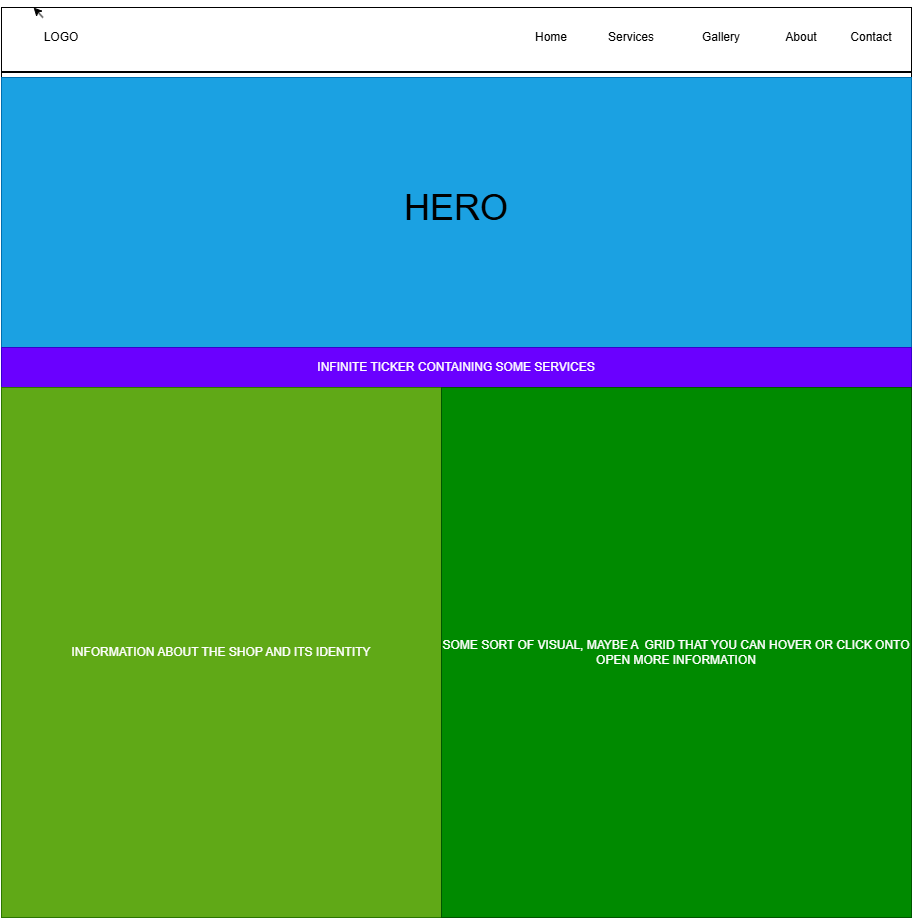
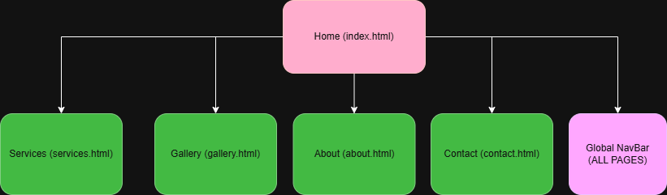

Project Overview
1. Project Overview
Application & Purpose
This project involves designing and developing a professional website for Abstract Garage & Customs, an automotive customization and detailing business based in Aberdeen, NC. The website will serve as the business's primary online presence, showcasing services, completed work, and contact information. Its purpose is to improve the shop's visibility, establish credibility with potential customers, and provide an easy way for clients to inquire about services, replacing the current lack of a dedicated, branded web presence.
Intended Audience
- Prospective Customers - individuals seeking 1 on 1 automotive work, or modifications in the Aberdeen area who discover the shop through search engines or referrals.
- Returning Customers - existing customers looking to browse recent work, confirm services offered, or reach out for follow-up inquiries.
- Car Enthusiasts - hobbyists and enthusiasts who may share or discover the gallery and want to connect with the shop community.
- Business owner / admin - the client, who needs the site to accurately and professionally represent the brand.
Overview of Content
- Home page introducing the shop, its identity, and featured work.
- Services page detailing offerings (engine work, A/C, brakes, etc.)
- Gallery page showcasing completed builds and custom work with interactive image viewing.
- About page covering the shop's story, values, and the team.
- Contact page with a validated inquiry form and embedded Google Map.
2. Client Information
- Name
- Joshua Evans Sr.
- Business
- Abstract Garage & Customs
- Location
- Aberdeen, NC
- [Private]
- Phone
- [Private]
3. Wireframe
The wireframe below illustrates the default page layout that will be used consistently across the Abstract Garage & Customs website, including the header, navigation bar, main content area, and footer structure.

4. Site Map
The site map below outlines the five pages of the Abstract Garage & Customs website and how they are connected through the global navigation bar.

5. Page Design
Page 1: Home (index.html)
| Field | Details |
|---|---|
| Purpose | Introduce the shop, establish brand identity, and direct users to key sections of the site. |
| Audience | All visitors — first-time and returning customers, car enthusiasts. |
| Content | Hero section with shop name and tagline; brief introduction paragraph; featured/recent work highlights (3 cards); call-to-action buttons linking to Gallery and Contact pages. |
| User Data Entry? | No |
| Validations | None |
| Buttons / Links | "View Our Work" button → Gallery; "Get in Touch" button → Contact; full global navigation bar. |
| Actions | Featured work cards are hover-interactive (CSS scale transform); clicking a card navigates to the Gallery page. |
| Notes | Will include a jQuery UI tooltip on the featured work cards displaying a short caption on hover. |
Page 2: Services (services.html)
| Field | Details |
|---|---|
| Purpose | Detail all services the shop offers with descriptions and pricing tiers. |
| Audience | Prospective customers evaluating whether Abstract Garage meets their needs. |
| Content | Organized list/grid of services: brake repair, engine diagnostics, A/C service, oil changes, suspension work, etc. Each service has a name, description, and starting price estimate. |
| User Data Entry? | No |
| Validations | None |
| Buttons / Links | "Book a Consultation" button → Contact page. Navigation bar present. |
| Actions | Accordion-style jQuery UI widget to expand/collapse service descriptions, keeping the page clean. "Schedule a Visit" scrolls or routes to Contact. |
| Notes | jQuery UI Accordion widget used here for the collapsible service detail panels (e.g., "Brake Services", "Engine & Diagnostics", "A/C & Heating"). |
Page 3: Gallery (gallery.html)
| Field | Details |
|---|---|
| Purpose | Showcase completed custom work to demonstrate the shop's craftsmanship and range of capabilities. |
| Audience | Prospective customers, car enthusiasts, referrals viewing past work. |
| Content | Grid of before-and-after photos showcasing completed repair jobs. Each image pair demonstrates the quality of work. Images are organized by service category (Brakes, Engine, A/C, Other). |
| User Data Entry? | No |
| Validations | None |
| Buttons / Links | Filter buttons (All / Brakes / Engine / A/C) to sort gallery by service type. Navigation bar present. |
| Actions | Clicking a thumbnail opens a lightbox overlay showing the full before-and-after image with a caption describing the repair. Filter buttons dynamically show/hide images using JavaScript. Hover effect reveals the repair type and vehicle. |
| Notes | This page satisfies the assignment's interactive image/gallery requirement. AJAX will be used to load gallery data from a JSON file. |
Page 4: About (about.html)
| Field | Details |
|---|---|
| Purpose | Tell the shop's story, share the team's background, and build trust with potential clients. |
| Audience | All visitors, particularly those making a first decision on whether to trust the shop. |
| Content | Shop origin story paragraph; owner bio with photo; mission statement; values list; years in business / cars completed statistics displayed as animated counters. |
| User Data Entry? | No |
| Validations | None |
| Buttons / Links | "See Our Work" → Gallery; "Contact Us" → Contact. Navigation bar present. |
| Actions | Animated number counters (using JavaScript) that count up when the stat section scrolls into view — e.g., "500+ repairs completed," "10+ years in business." |
| Notes | jQuery UI Tabs widget used if content is split into sub-sections (e.g., Story / Team / Values tabs). |
Page 5: Contact (contact.html)
| Field | Details |
|---|---|
| Purpose | Allow potential clients to submit inquiries and find the shop's physical location. |
| Audience | Prospective and returning customers who want to reach out or book a service. |
| Content | Contact inquiry form; shop address, phone, and email; embedded Google Map showing shop location; business hours. |
| User Data Entry? | Yes — inquiry form with: Name (text), Email (email), Phone (tel, optional), Service Needed (dropdown), Message (textarea), and Submit button. |
| Validations | Name: required, non-empty. Email: required, valid format (regex). Phone: optional, numeric/formatted check if provided. Message: required, minimum 20 characters. Real-time validation with jQuery — field outlines turn red on error, green on valid. |
| Buttons / Links | Submit button (triggers validation then form submission); Reset/Clear button. Navigation bar present. |
| Actions | On Submit: client-side validation runs; if all fields pass, a jQuery UI Dialog (modal) confirms submission success. Form data is not stored (read-only; no backend). Map uses an embedded Google Maps iframe. |
| Notes | jQuery UI Dialog widget used for the success confirmation modal. AJAX used to simulate/confirm form submission feedback. |
6. Dynamic Functionality
Before & After Gallery with Category Filtering — Gallery Page
A filterable before-and-after photo gallery will allow users to sort
completed repair jobs by service type (All, Brakes, Engine, A/C).
Clicking a filter button uses JavaScript to dynamically show or hide
images matching the selected category without reloading the page.
Clicking a thumbnail opens a lightbox overlay displaying the full
image with a caption describing the vehicle and the repair performed.
Gallery data (image paths, captions, and categories) will be loaded
from a local JSON file using an AJAX $.getJSON() call,
which populates the grid on page load. This satisfies the assignment's
interactive gallery requirement.
Isotope Filtering Layout — metafizzy.co
Accordion Service Menu — Services Page
A jQuery UI Accordion widget will organize the shop's repair services into collapsible sections — for example, "Brake Services," "Engine & Diagnostics," "A/C & Heating," and "Routine Maintenance." Clicking a section header expands it to reveal a description of that service and an estimated price range, while automatically collapsing the previously open panel. This keeps the page concise and prevents users from being overwhelmed by a long list of services at once.
Example of this interactivity:
jQuery UI Accordion Demo — jqueryui.com
Contact Form Validation & Confirmation Modal — Contact Page
The service inquiry form will use jQuery for real-time client-side validation. Each field is checked on blur and again on submit: the Name field must be non-empty, the Email field must match a valid format via regex, Phone is optional but validated as numeric if provided, and the Message field must be at least 20 characters. Invalid fields receive a red outline and an inline error message; valid fields turn green. On successful validation, an AJAX request simulates form submission, and a jQuery UI Dialog modal appears confirming that the inquiry was received. The form is then reset.
Example of this interactivity:
jQuery Validate Plugin Demo — jqueryvalidation.org
jQuery UI Dialog Demo — jqueryui.com
Animated Statistics Counter — About Page
Key shop milestones — such as "500+ Repairs Completed," "10+ Years in
Business," and "100% Satisfaction Guaranteed" — will be displayed as
animated number counters that count up from zero when the user scrolls
that section into view. This is implemented using the JavaScript
Intersection Observer API to trigger the animation at the right
moment, combined with a setInterval-based increment loop
for each counter. This makes the About page feel dynamic and
reinforces the shop's credibility at a glance.
Example of this interactivity:
Animated Number Counter — CodePen
jQuery UI Tooltip on Service Cards — Home Page
The featured service cards on the home page (e.g., Brake Repair, Engine Work, A/C Service) will use jQuery UI Tooltips to display a one-line description of each service when the user hovers over the card. For example, hovering over "Brake Repair" shows "Pad replacement, rotor resurfacing, and full brake inspections." This adds helpful context without cluttering the card layout itself.
Example of this interactivity:
jQuery UI Tooltip Demo — jqueryui.com